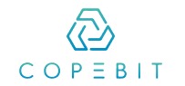
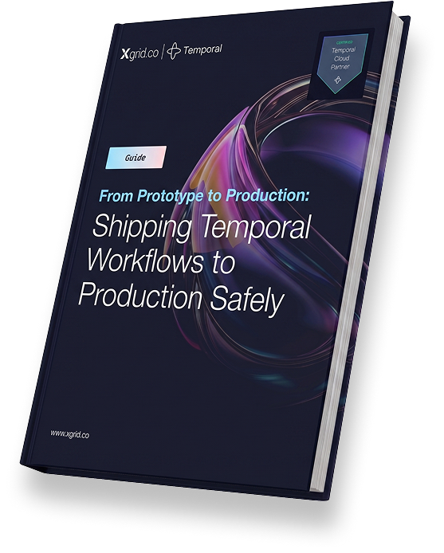

$50k+
per-site tool losses reduced to near zero
● Enterprise Whitepaper | Field-Tested Temporal Patterns
This whitepaper shows how Xgrid applied Temporal in harsh physical field operations, where GPS is unreliable, connectivity disappears, and missed events create payroll errors, compliance risk, safety gaps, and asset loss.
Inside, you will see how one production deployment pushed payroll accuracy above 99%, reduced $50k+ per-site tool losses to near zero, and replaced weeks of paperwork with a durable, auditable workflow history.
per-site tool losses reduced to near zero
payroll accuracy
of paperwork replaced by on-demand workflow history
of concurrent workflows supported with a fixed 5-node worker cluster
Instant access. Real architecture. Real outcomes.
About this guide
Temporal makes it easier to build durable workflows. But getting to production safely takes more than a working prototype. This guide walks through the decisions that matter most.
Download now →Mobile apps absorb chaos at the edge; Temporal handles orchestration in the cloud. Business logic stays safe even when connectivity, GPS, and devices are all failing at once. See exactly how this boundary was drawn, and why it changed everything for on-site operations.
Each technician's shift runs as a long-lived Temporal workflow. Check-ins, task starts, breaks, and check-outs are all signals, logged immutably and enforced in sequence. No task can begin without a safety briefing. No check-out if tools are still signed out. Learn why this model outperforms request/response APIs for human-driven processes.
Events queued locally while underground are batched and replayed in exact order the moment connectivity returns, even if the workflow was never started. The state machine lazily initialises and catches up. Offline isn't a failure mode here; it's an expected operating condition.
Temporal's pull-based workers absorb morning spikes naturally. Signals are persisted immediately and pulled as capacity allows. USIS ran thousands of concurrent workflows across hundreds of sites on just five Kubernetes nodes, near 100% utilisation, without a single dropped check-in or auto-scaler in sight.
A Custom Data Converter encrypts every payload before it leaves the on-prem environment. Temporal Cloud orchestrates scheduling and sequencing without ever seeing plaintext. Full managed-service benefits, full data sovereignty: the playbook for any regulated industry adopting Temporal.
Payroll jumped from ~80% to 99%+ accuracy. Tool losses per site dropped from $50k+ to near zero. Compliance records became exportable on demand. Management went from reactive to real-time, with live worker heatmaps, blocker alerts, and months of workflow data for analytics. Each architecture decision tied to a measurable outcome.
Experts behind this whitepaper
CEO / CTO
Leads the technical vision behind Xgrid’s production-grade workflow systems, with a focus on durable execution, architecture strategy, & enterprise reliability.
COO
Brings the operational lens behind enterprise delivery—connecting workflow design to business outcomes like compliance, rollout success, & execution at scale.
Senior SDM
Leads engineering execution across resilient workflow platforms, with hands-on depth in observability, deployment safety, and production-ready systems.
BUILDING CLOUD AND APP SOLUTIONS FOR LEADING BRANDS

Case Studies
Explore how we help enterprises modernize securely, automate reliably, and scale intelligently - from HIPAA-compliant healthcare apps to AI-powered network operations.
A construction workforce management platform faced recurring reliability failures in its most critical production workflows
See More →A fast-growing scale-up built sophisticated on-premises Temporal deployment to power AI workflows and business process orchestration
See More →Xgrid partnered with a Fortune 500 enterprise to deliver mission-critical Temporal workflows with enterprise
See More →Field operations cannot afford downtime. See how durable workflow orchestration and offline-first mobile apps transformed on-site workforce management - ensuring accurate tracking, seamless sync, and compliant reporting on every job site.
See More →Gain practical insights into how Xgrid helps teams use Temporal to improve reliability, compliance, and operational performance at scale.
